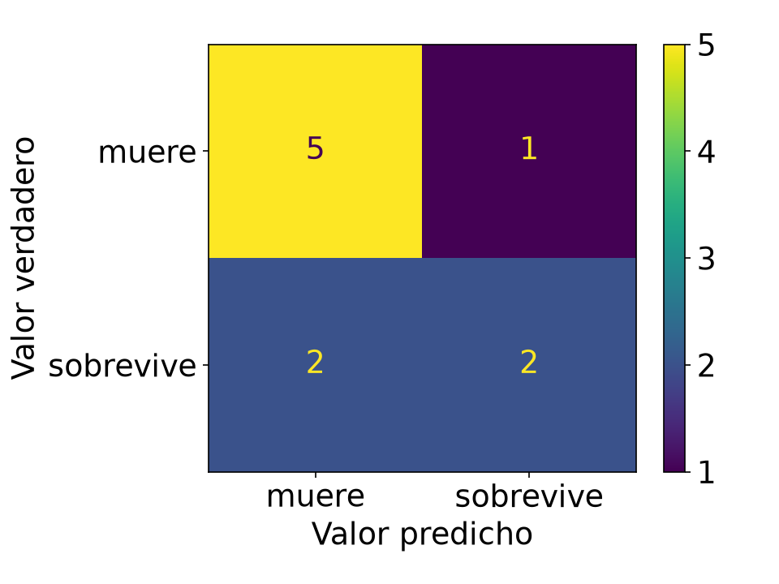
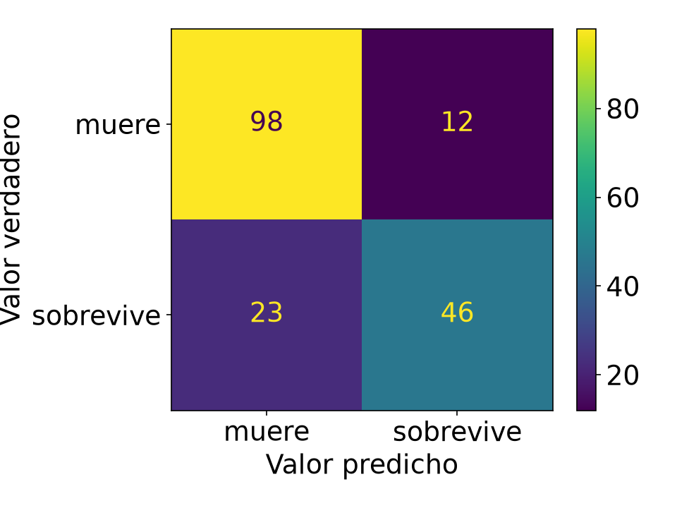
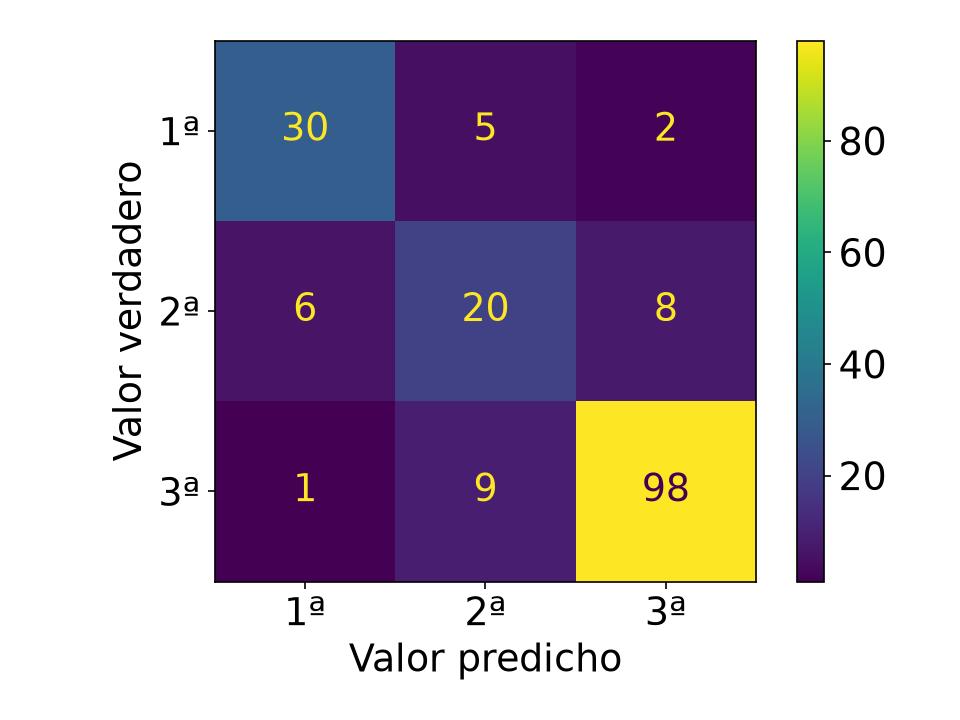

Píldora · M2 Data Analytics & Machine Learning
¿Cómo sabemos si un modelo es bueno?
Juan Carlos E · 11 de noviembre de 2026
Agenda
| Bloque | Qué veremos | Tiempo |
|---|---|---|
| Contexto | El proceso completo y dónde encaja la evaluación | 4 min |
| Clasificación | Matriz de confusión, métricas con mini ejercicios, ROC-AUC y multiclase | 20 min |
| Regresión | MAE, MSE, RMSE y R², una celda por métrica | 6 min |
| Elegir métrica | Qué métrica usar y cuándo | 3 min |
| Caso Titanic | Cuatro modelos juzgados con métricas, de principio a fin | 9 min |
| Cierre | Ideas clave | 3 min |
| Kahoot | Repaso jugando | 15 min |
Context · The full process
Pick the metric here
What we want to predict and which mistake costs more
Already seen
Get the dataset: the Titanic CSV
Already seen
Explore and understand the data
12/11 · 13/11
Fill missing values and turn text into numbers
10/11
Train to study, test for the exam
09/11
The model learns from train: fit()
Today
Metrics on test, compared with a dummy model
17/11 · 18/11
Another model, another threshold, other settings
At the end
Put it to work and check it keeps getting it right
↺
Trial and error: repeat 4 → 8 until we meet the goal
La idea
| Pasajero | Realidad | Predicción | ¿Acierta? |
|---|---|---|---|
| #1 | Sobrevive | Sobrevive | Sí |
| #2 | Muere | Muere | Sí |
| #3 | Sobrevive | Muere | No |
| #4 | Muere | Sobrevive | No |
| #5 | Muere | Muere | Sí |
Lo hacemos con los pasajeros de test: el modelo no los vio al entrenar.
No todos los fallos son iguales: el #3 y el #4 se equivocan de forma distinta.
Clasificación binaria · La base de todo
Clasificación binaria: el modelo elige entre 2 clases · 0 = muere (negativo) · 1 = sobrevive (positivo)
Predijo: muere (0)
Predijo: sobrevive (1)
Realmente murió (0) · 110
98
Verdadero negativo (TN)
12
Falso positivo (FP)
Realmente sobrevivió (1) · 69
23
Falso negativo (FN)
46
Verdadero positivo (TP)
lo que predijo el modelo
si acertó o no
Mismo orden que scikit-learn:
[[TN, FP], [FN, TP]]
Azul: aciertos · Naranja: errores
179 pasajeros de test
File
Edit
View
Insert
Cell
Kernel
Widgets
Help
Clasificación binaria: 2 clases · 0 = muere · 1 = sobrevive · mini ejercicio de 10 pasajeros
In [1]:
from sklearn.metrics import confusion_matrix, ConfusionMatrixDisplay
y_verdadero = [0, 0, 0, 0, 0, 0, 1, 1, 1, 1]
y_predicho = [0, 0, 0, 0, 0, 1, 1, 1, 0, 0]
print(confusion_matrix(y_verdadero, y_predicho))
disp = ConfusionMatrixDisplay.from_predictions(
y_verdadero, y_predicho, display_labels=["muere", "sobrevive"])
disp.ax_.set(xlabel="Valor predicho", ylabel="Valor verdadero")
Out[1]:
[[5 1]
[2 2]]

Cómo se lee
[[TN, FP],
[FN, TP]]
Filas = valor verdadero · columnas = valor predicho
5 muertos bien · 1 falsa alarma · 2 supervivientes perdidos · 2 encontrados
Con el Titanic completo (179 pasajeros)

Mismo orden que la diapositiva anterior: primero el 0 («muere»), después el 1 («sobrevive»).
File
Edit
View
Insert
Cell
Kernel
Widgets
Help
y : valor verdadero
ŷ : valor predicho
Mini ejercicio: 10 pasajeros · 0 = muere · 1 = sobrevive
Accuracy =
TP + TN
TP + TN + FP + FN
=
2 + 5
10
= 0,7
Aciertos entre total: los FP y los FN cuentan igual, no distingue el tipo de error
In [2]:
from sklearn.metrics import accuracy_score
y_verdadero = [0, 0, 0, 0, 0, 0, 1, 1, 1, 1]
y_predicho = [0, 0, 0, 0, 0, 1, 1, 1, 0, 0]
accuracy_score(y_verdadero, y_predicho)
Out[2]:
0.7
A mano
Aciertos: 5 + 2 = 7 de 10
7 / 10 = 0,7
Con el Titanic completo (179 pasajeros)
(46 + 98) / 179 = 0,80
La más intuitiva… y la más engañosa.
Cuidado
61 %
de accuracy en el Titanic sin mirar ni un solo dato (110 / 179)
99 %
de accuracy si el 99 % de las operaciones son legales… y no detecta ni un fraude
«Todos mueren»:
Accuracy =
0 + 110
179
= 0,61
pero
Recall =
0
0 + 69
= 0
Con clases desequilibradas, el accuracy engaña. Cómo arreglarlo: mañana, 12/11.
File
Edit
View
Insert
Cell
Kernel
Widgets
Help
y : valor verdadero
ŷ : valor predicho
Mini ejercicio: 10 pasajeros · 0 = muere · 1 = sobrevive
Precision =
TP
TP + FP
=
2
2 + 1
= 0,67
Precision mira los FP (falsos positivos): dijo «sobrevive» y murió
In [3]:
from sklearn.metrics import precision_score
y_verdadero = [0, 0, 0, 0, 0, 0, 1, 1, 1, 1]
y_predicho = [0, 0, 0, 0, 0, 1, 1, 1, 0, 0]
precision_score(y_verdadero, y_predicho)
Out[3]:
0.6666666666666666
A mano
Dijo «sobrevive» 3 veces y acertó 2
2 / 3 = 0,67
Con el Titanic completo (179 pasajeros)
46 / (46 + 12) = 0,79
Importa si el falso positivo sale caro: filtro de spam.
File
Edit
View
Insert
Cell
Kernel
Widgets
Help
y : valor verdadero
ŷ : valor predicho
Mini ejercicio: 10 pasajeros · 0 = muere · 1 = sobrevive
Recall =
TP
TP + FN
=
2
2 + 2
= 0,5
Recall mira los FN (falsos negativos): sobrevivió y dijo «muere»
In [4]:
from sklearn.metrics import recall_score
y_verdadero = [0, 0, 0, 0, 0, 0, 1, 1, 1, 1]
y_predicho = [0, 0, 0, 0, 0, 1, 1, 1, 0, 0]
recall_score(y_verdadero, y_predicho)
Out[4]:
0.5
A mano
Sobrevivieron 4 y encontró 2
2 / 4 = 0,5
Con el Titanic completo (179 pasajeros)
46 / (46 + 23) = 0,67
Importa si el falso negativo sale caro: cáncer, fraude.
El dilema · Precision vs recall
Umbral bajo
Recall =
TP
TP + FN
Pocos FN → recall alto
Precision =
TP
TP + FP
Muchos FP → precision baja
Umbral alto
Precision =
TP
TP + FP
Pocos FP → precision alta
Recall =
TP
TP + FN
Muchos FN → recall bajo
Elegir es una decisión de negocio, no matemática.
File
Edit
View
Insert
Cell
Kernel
Widgets
Help
y : valor verdadero
ŷ : valor predicho
Mini ejercicio: 10 pasajeros · 0 = muere · 1 = sobrevive
F1 =
2·TP
2·TP + FP + FN
=
4
4 + 1 + 2
= 0,57
F1 mira los dos: FP y FN · es lo mismo que 2·P·R / (P + R)
In [5]:
from sklearn.metrics import f1_score
y_verdadero = [0, 0, 0, 0, 0, 0, 1, 1, 1, 1]
y_predicho = [0, 0, 0, 0, 0, 1, 1, 1, 0, 0]
f1_score(y_verdadero, y_predicho)
Out[5]:
0.5714285714285714
A mano
2 × 0,67 × 0,5 / (0,67 + 0,5)
= 0,57
Con el Titanic completo (179 pasajeros)
2 × 0,79 × 0,67 / 1,46 ≈ 0,72
No se deja engañar: si una de las dos es baja, el F1 también.
Tu turno · Ejercicio guiado · 3 minutos
Un modelo predice quién sobrevive. Comparamos con lo que pasó de verdad.
Dice: sobrevive
Dice: muere
Sobrevivió de verdad
30
TP
8
FN
Murió de verdad
12
FP
50
TN
1 · Accuracy: ¿cuántos acierta en total?
TP (30) + TN (50)
Total (100)
=
0,80
2 · Precision: si dice «sobrevive», ¿acierta?
TP (30)
TP (30) + FP (12)
=
0,71
3 · Recall: ¿encuentra a los que sobreviven?
TP (30)
TP (30) + FN (8)
=
0,79
4 · F1: el equilibrio de los dos
2·TP (60)
2·TP (60) + FP (12) + FN (8)
=
0,75
¿Encuentra al menos a 8 de cada 10 supervivientes?
No, por muy poco: 0,79 < 0,80
Métrica 5 · ROC-AUC
Eje X: falsos positivos · Eje Y: recall
Curva azul: el modelo · Discontinua: el azar
El modelo da una probabilidad: «0,8 de sobrevivir».
La curva ROC muestra cómo se comporta con todos los umbrales.
Eje Y (recall) =
TP
TP + FN
Eje X (falsas alarmas) =
FP
FP + TN
El AUC es el área bajo la curva:
0,5 = azar
> 0,8 = bueno
1 = perfecto
Multiclase · Para vuestro proyecto
from sklearn.metrics import ConfusionMatrixDisplay
disp = ConfusionMatrixDisplay.from_predictions(clase_real, clase_predicha,
display_labels=["1ª", "2ª", "3ª"])
disp.ax_.set(xlabel="Valor predicho", ylabel="Valor verdadero")

Recall por clase = diagonal / total de la fila: R₁ = 30/37 = 0,81 · R₂ = 20/34 = 0,59 · R₃ = 98/108 = 0,91
Macro avg · media simple
R₁ + R₂ + R₃
3
= 77 %
Todas las clases pesan igual. Delata a la clase que va mal.
Weighted avg · media ponderada
37·R₁ + 34·R₂ + 108·R₃
179
= 83 %
Pesa más la clase con más pasajeros. Puede esconder a la que va mal.
Regresión · Predecir un número
| Pasajero | Real | Predicho | Error |
|---|---|---|---|
| A | 10 £ | 15 £ | 5 |
| B | 30 £ | 25 £ | 5 |
| C | 80 £ | 60 £ | 20 |
Columna Fare del Titanic. Ya no hay aciertos o fallos: hay errores más grandes o más pequeños.
Las 4 métricas que vamos a ver, una por diapositiva:
MAE · error medio
MSE · error al cuadrado
RMSE · raíz del MSE
R² · cuánto explica el modelo
File
Edit
View
Insert
Cell
Kernel
Widgets
Help
y : valor verdadero
ŷ : valor predicho
Mini ejercicio: precio del billete de 3 pasajeros, en libras
MAE =
Σ |y − ŷ|
n
=
5 + 5 + 20
3
= 10
Suma los errores sin signo y divide entre n, el número de pasajeros
In [6]:
from sklearn.metrics import mean_absolute_error
y_verdadero = [10, 30, 80]
y_predicho = [15, 25, 60]
mean_absolute_error(y_verdadero, y_predicho)
Out[6]:
10.0
A mano
Errores: 5, 5 y 20
(5 + 5 + 20) / 3 = 10
«De media me equivoco en 10 libras». La más fácil de explicar.
File
Edit
View
Insert
Cell
Kernel
Widgets
Help
y : valor verdadero
ŷ : valor predicho
Mini ejercicio: precio del billete de 3 pasajeros, en libras
MSE =
Σ (y − ŷ)²
n
=
25 + 25 + 400
3
= 150
Al cuadrado: el error de 20 se convierte en 400 y domina la media
In [7]:
from sklearn.metrics import mean_squared_error
y_verdadero = [10, 30, 80]
y_predicho = [15, 25, 60]
mean_squared_error(y_verdadero, y_predicho)
Out[7]:
150.0
A mano
Errores al cuadrado: 25, 25 y 400
(25 + 25 + 400) / 3 = 150
El error de 20 pesa 16 veces más que uno de 5. Pero está en libras², difícil de explicar.
File
Edit
View
Insert
Cell
Kernel
Widgets
Help
y : valor verdadero
ŷ : valor predicho
Mini ejercicio: precio del billete de 3 pasajeros, en libras
RMSE = √
Σ (y − ŷ)²
n
=
√150 ≈ 12,25
La raíz deshace el cuadrado: el error vuelve a estar en libras
In [8]:
from sklearn.metrics import root_mean_squared_error
y_verdadero = [10, 30, 80]
y_predicho = [15, 25, 60]
root_mean_squared_error(y_verdadero, y_predicho)
Out[8]:
12.24744871391589
A mano
√150 = 12,2
Vuelve a estar en libras. Si es bastante mayor que el MAE (10), hay algún error grande.
File
Edit
View
Insert
Cell
Kernel
Widgets
Help
y : valor verdadero
ŷ : valor predicho
ȳ : media de los valores verdaderos
Mini ejercicio: precio del billete de 3 pasajeros, en libras
R² = 1 −
Σ (y − ŷ)²
Σ (y − ȳ)²
= 1 −
450
2600
= 0,83
Arriba: errores de tu modelo · Abajo: errores de predecir siempre la media
In [9]:
from sklearn.metrics import r2_score
y_verdadero = [10, 30, 80]
y_predicho = [15, 25, 60]
r2_score(y_verdadero, y_predicho)
Out[9]:
0.8269230769230769
A mano
Media real ȳ = 40
1 − 450 / 2600 = 0,83
1 = perfecto · 0 = como predecir siempre la media. Negativo = peor que eso.
Chuleta
| Situación | Métrica | Fórmula |
|---|---|---|
| Clases equilibradas, todos los errores pesan igual | Accuracy | (TP + TN) / total |
| Un falso positivo sale caro (spam) | Precision | TP / (TP + FP) |
| Un falso negativo sale caro (cáncer, fraude) | Recall | TP / (TP + FN) |
| Clases desequilibradas, o importan los dos errores | F1 | 2·TP / (2·TP + FP + FN) |
| Comparar modelos sin fijar un umbral | ROC-AUC | área bajo la curva ROC |
| Regresión: error fácil de explicar | MAE | Σ |y − ŷ| / n |
| Regresión: castigar los errores grandes | RMSE | √( Σ (y − ŷ)² / n ) |
| Regresión: cuánta variación explica el modelo | R² | 1 − Σ (y − ŷ)² / Σ (y − ȳ)² |
Caso práctico · De principio a fin
Cuatro candidatos, un objetivo y las métricas como juez.
Todos los resultados son reales, calculados antes de la clase con los 179 pasajeros de test.
Caso Titanic · Paso 1 · Objetivo
Objetivo: recall ≥ 0,80 · precision ≥ 0,60
Somos el equipo de rescate. El modelo nos dice a quién buscar primero.
Lo peor: no buscar a alguien que está vivo (FN).
También malo: buscar a demasiados que no están (FP): no damos abasto.
El criterio, antes de entrenar
Recall ≥ 0,80
encontrar al menos 8 de cada 10 supervivientes
Precision ≥ 0,60
que al menos 6 de cada 10 búsquedas valgan la pena
Caso Titanic · Pasos 2 a 5 · Datos, EDA, preparar y dividir
Objetivo: recall ≥ 0,80 · precision ≥ 0,60
2 · Datos
891
pasajeros. Solo el 38 % sobrevivió: hay más «muere» que «sobrevive».
3 · EDA
Mujeres: 74 % sobreviven
Hombres: 19 %
1ª clase: 63 %
3ª clase: 24 %
Pista: el sexo lo explica casi todo.
4 · Preparar
Edad: 177 nulos → mediana
Embarque: 2 nulos → moda
Cabina: 687 nulos → fuera
Sexo y puerto, de texto a números.
5 · Dividir
712 / 179
train / test. En test hay 69 supervivientes: los que queremos encontrar.
Caso Titanic · Candidato 1
Objetivo: recall ≥ 0,80 · precision ≥ 0,60
No mira nada: siempre dice «muere». Es el mínimo que cualquier modelo tiene que superar.
Dijo: sobrevive
Dijo: muere
Sobrevivió
0
TP
69
FN · se escapan
Murió
0
FP · falsa alarma
110
TN
Accuracy
61 %
Precision
— ✗
Recall
0 % ✗
Suspende
61 % de accuracy sin aprender nada.
No encuentra a ni un superviviente: los 69 se escapan.
Caso Titanic · Candidato 2
Objetivo: recall ≥ 0,80 · precision ≥ 0,60
Sin entrenar nada: aplicamos la pista del EDA. Si es mujer, buscarla; si es hombre, no.
Dijo: sobrevive
Dijo: muere
Sobrevivió
45
TP
24
FN · se escapan
Murió
16
FP · falsa alarma
94
TN
Accuracy
78 %
Precision
74 % ✓
Recall
65 % ✗
Suspende por poco
Una sola regla ya saca un 78 %. Es la referencia a batir.
Pero se escapan 24 supervivientes: casi todos, hombres y niños.
Caso Titanic · Candidato 3
Objetivo: recall ≥ 0,80 · precision ≥ 0,60
Ahora sí, un modelo entrenado con todas las columnas: clase, sexo, edad, familia, tarifa y puerto.
Dijo: sobrevive
Dijo: muere
Sobrevivió
46
TP
23
FN · se escapan
Murió
12
FP · falsa alarma
98
TN
Accuracy
80 %
Precision
79 % ✓
Recall
67 % ✗
Mejor… pero suspende
Gana a la regla en accuracy y precision. AUC = 0,84.
Recall 67 %: aún se escapan 23 de 69.
Caso Titanic · Candidato 4
Objetivo: recall ≥ 0,80 · precision ≥ 0,60
Otro algoritmo. En test saca el mejor accuracy de todos… ¿lo elegimos?
Dijo: sobrevive
Dijo: muere
Sobrevivió
51
TP
18
FN · se escapan
Murió
14
FP · falsa alarma
96
TN
Accuracy
82 %
Precision
78 % ✓
Recall
74 % ✗
Suspende y es sospechoso
En train: 98 % de accuracy. En test: 82 %.
Se ha aprendido los apuntes de memoria (overfitting, 17/11). Recall 74 %.
Caso Titanic · Paso 8 · Mejorar
Objetivo: recall ≥ 0,80 · precision ≥ 0,60
No cambiamos de modelo: le pedimos que diga «sobrevive» con menos seguridad (0,25 en vez de 0,5).
Dijo: sobrevive
Dijo: muere
Sobrevivió
56
TP
13
FN · se escapan
Murió
33
FP · falsa alarma
77
TN
Accuracy
74 %
Precision
63 % ✓
Recall
81 % ✓
Aprueba
Se escapan 13 en vez de 23. Recall 81 %.
A cambio, más falsas alarmas (33) y el accuracy baja al 74 %. Y está bien.
Caso Titanic · Veredicto
Objetivo: recall ≥ 0,80 · precision ≥ 0,60
| Candidato | Accuracy | Precision | Recall | ¿Cumple? |
|---|---|---|---|---|
| 1 · «Todos mueren» | 61 % | — | 0 % | ✗ |
| 2 · Regla «mujer» | 78 % | 74 % | 65 % | ✗ |
| 3 · Logística (umbral 0,5) | 80 % | 79 % | 67 % | ✗ |
| 4 · Árbol de decisión | 82 % | 78 % | 74 % | ✗ |
| 3b · Logística (umbral 0,25) | 74 % | 63 % | 81 % | ✓ |
1. El listón se puso antes, en el objetivo.
2. Compara con un modelo tonto y con una regla simple.
3. Si train ≫ test, desconfía.
4. El umbral también se elige.
Cierre
1
Compáralo siempre con un modelo tonto.
2
Esa pregunta decide entre precision y recall.
3
Hay la adecuada para tu problema.
Kahoot · 15 minutos
Entra en kahoot.it e introduce el PIN
PIN: [______]